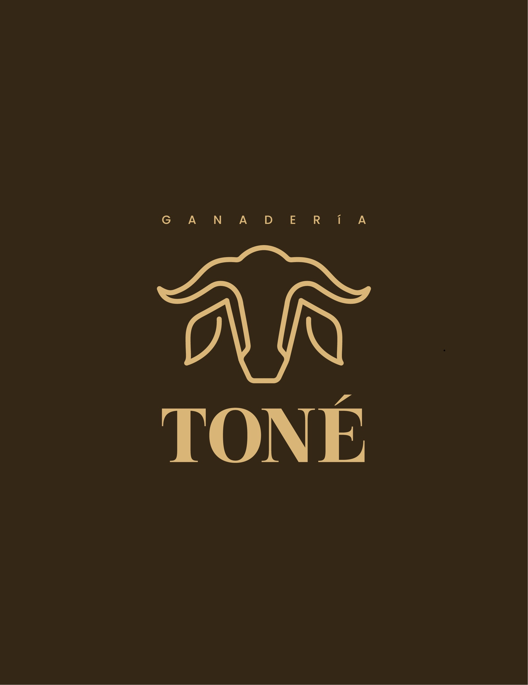
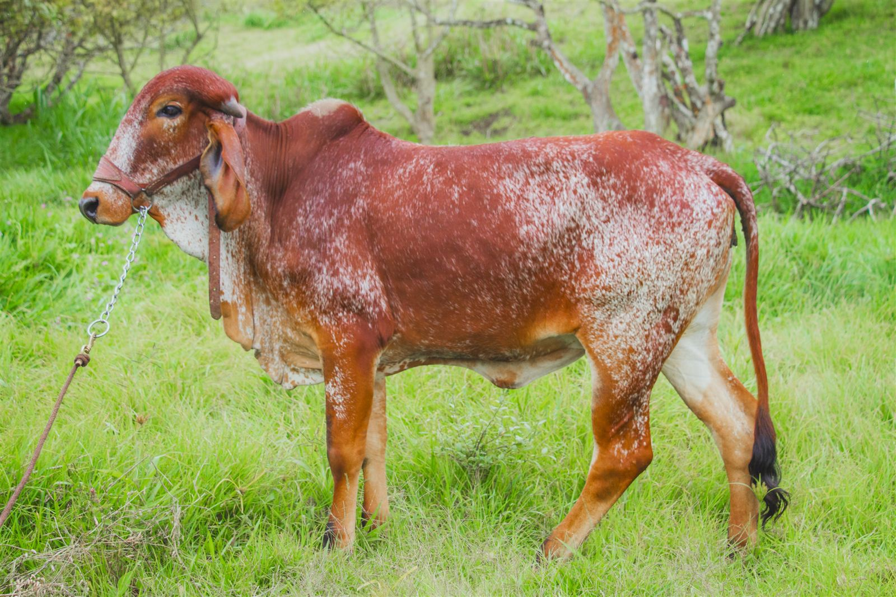
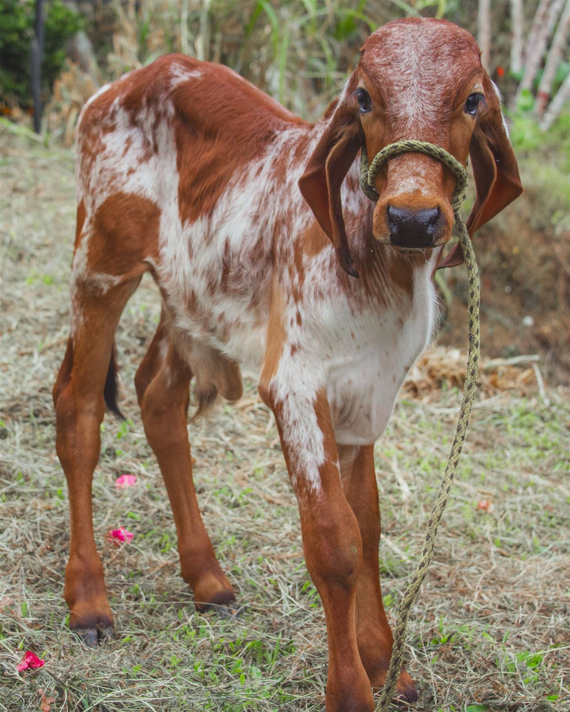
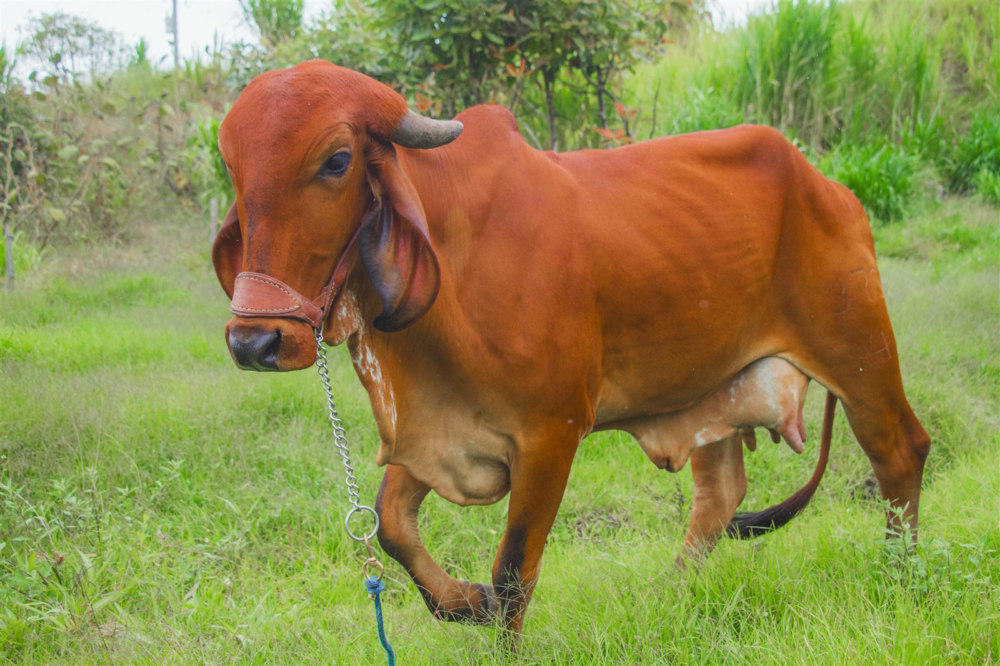
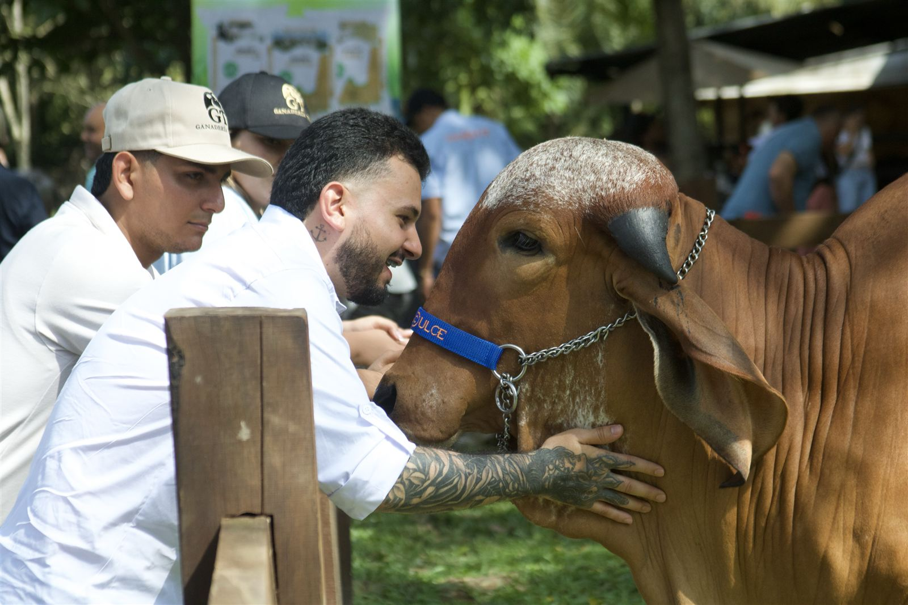
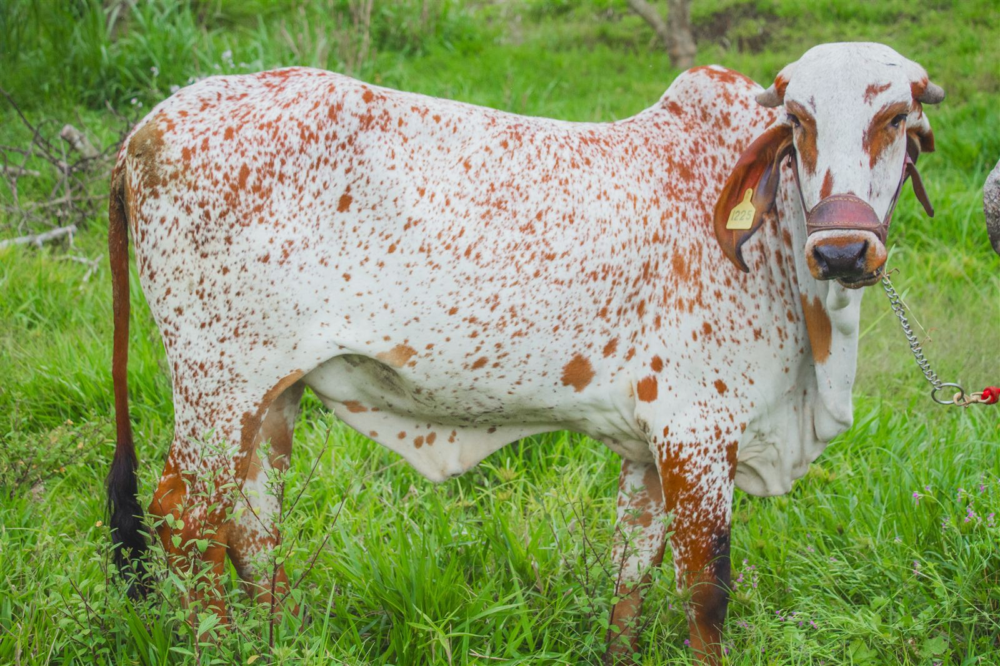
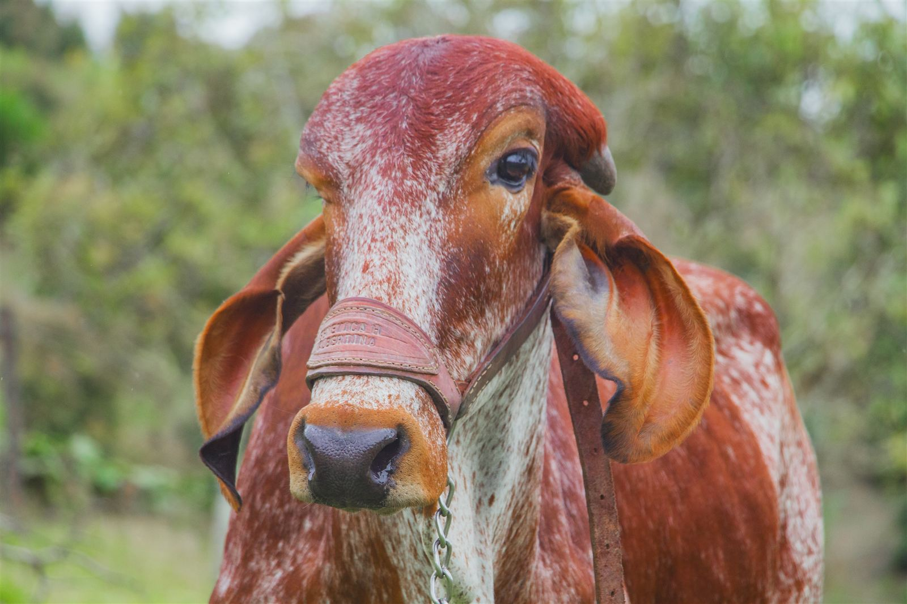
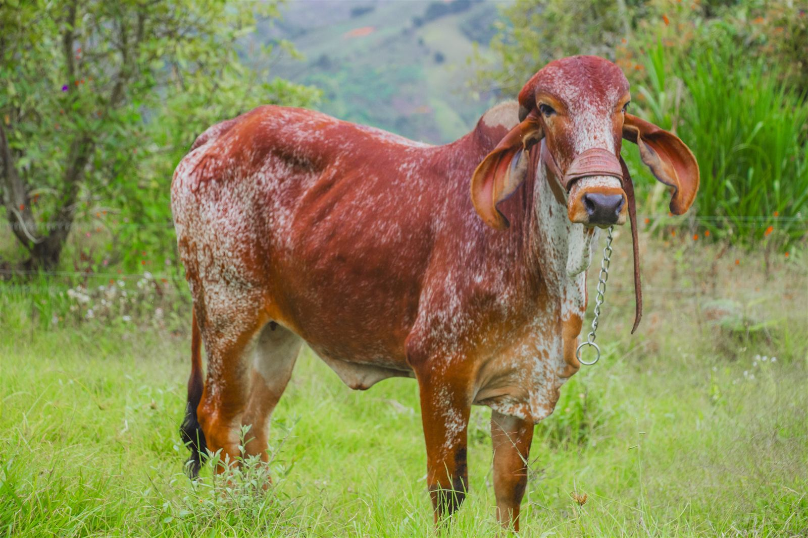
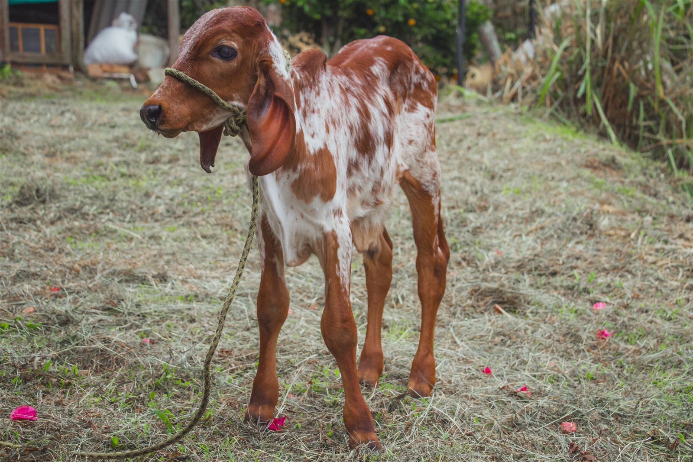
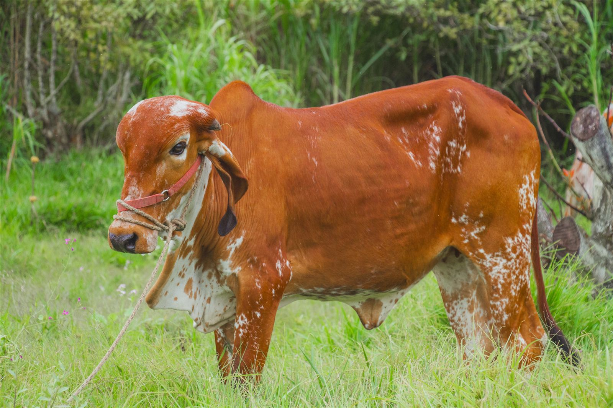

Propuesta de sociedad
Criamos calidad, proyectamos genética
01 · La propuesta
Ganadería Toné busca un socio para abrir una sucursal en una zona central, cerca de Medellín. Es la misma Ganadería Toné, pero más cerca de los compradores y de las ferias, para vender más y que nuestra genética se vea.
Animales, preñeces, crías y biotecnología en una plaza nueva, más cerca de los compradores.
Una vitrina de genética Gyr y Gyrolando con registro, donde se mueve el mercado.
Crecemos juntos: un negocio respaldado por animales que tienen valor por sí mismos.
02 · La raza
Invertimos en genética Gyr porque de una buena madre Gyr pura salen los dos productos que más valen.

03 · Cómo está construido
Gyr de pista, biotecnología (aspiración, ovocitos, preñeces) y venta de crías de élite. Es lo que más vale por animal.
Lechería con Gyr y Gyrolando
El capital y la reserva de la ganadería, sobre todo cuando el ganado es puro.
Lechería con Gyr y Gyrolando
Da datos (producción, selección de madres) y plata (flujo de caja constante). Sostiene todo lo demás.
04 · Cifras de mercado
Precios de referencia del mercado colombiano (pesos COP), sujetos a genética, registro y momento del mercado.
05 · La genética multiplica el valor
Valor de venta por unidad. Una sola donante Gyr de calidad puede producir ovocitos, preñeces y crías en un mismo año.

06 · La joya de la corona
Cada ternera pura es un activo: gana kilos, gana valor y respalda la sociedad. Si hace falta plata, se vende. Si no, se queda para producir más genética.
Cálculo a $38.000/kg (subasta Feria de Medellín).
07 · El piso y las paredes

08 · Haga sus propias cuentas
| Producto | Cantidad | Precio unitario | Subtotal |
|---|
Cambie cantidades y precios. Es un ejercicio de ventas brutas: no descuenta costos de alimentación, mano de obra, veterinaria ni biotecnología.
09 · La sociedad
Una finca en zona central, cerca de Medellín, que será la nueva sede de Ganadería Toné. Queda más cerca de los compradores, de las subastas y de las ferias.
La compra de vacas Gyr de élite para la nueva finca. De ellas salen las mejores hembras para pista y las madres de las Gyrolandas lecheras.
10 · Nuestras campeonas


Con el núcleo Gyr de élite de la nueva finca, la meta es construir juntos un nuevo camino de campeonas.
11 · Nuestros animales




Próximo paso
Criamos calidad, proyectamos genética
Visite la finca · Conozca los animales · Revisemos los números juntos